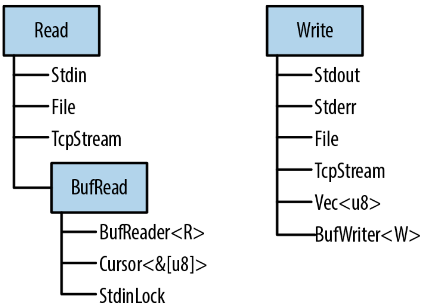
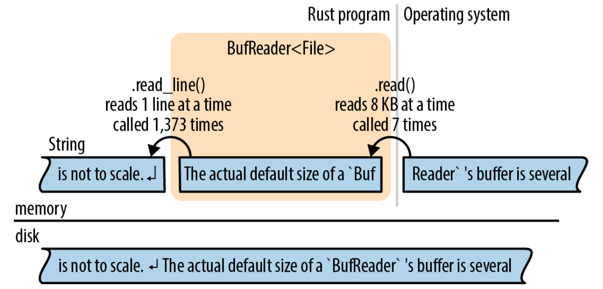

Chapter 18 输入输出
Doolittle: What concrete evidence do you have that you exist?
Bomb #20: Hmmmm… well… I think, therefore I am.
Doolittle: That’s good. That’s very good. But how do you know that anything else exists?
Bomb #20: My sensory apparatus reveals it to me.
——Dark Star
Rust中有关输入输出的特性围绕着三个trait：Read、BufRead、Write来组织：
-
1.
实现了Read的值有读取字节输入的方法。它们被称为读者(reader)。
-
2.
实现了BufRead的值是buffered reader(有缓存的读者)。它们支持Read的所有方法，加上读取文本的一行的方法，等等。
-
3.
实现了Write的值支持字节和UTF-8文本输出。它们被称为写者(writer)。
图18-1展示了这三个trait以及一些reader和writer类型的示例。
在本章中，我们将解释如何使用这些trait和它们的方法，包括图中出现的reader和writer类型，还有一些其他的和文件、终端、网络交互的方法。

18.1 Reader和Writer
Reader是你的程序可以从中读取字节的值。例如：
-
1.
使用std::fs::File::open(filename)打开的文件
-
2.
用于从网络中接收数据的std::net::TcpStream
-
3.
进程用来读取标准输入的std::io::stdin()
-
4.
std::io::Cursor<&[u8]>和std::io::Cursor<Vec<u8>>值，它们是从内存中的字节数组或vector中“读取”数据的reader
Writer是你的程序可以向其中写入字节的值。例如：
-
1.
使用std::fs::File::create(filename)打开的文件
-
2.
用于向网络中发送数据的std::net::TcpStream
-
3.
用于写入到终端的std::io::stdout()和std::io::stderr()
-
4.
Vec<u8>，它也是一个writer，它的write方法把数据附加到尾部
-
5.
std::io::Cursor<Vec<u8>>，类似于上面，但允许你同时读取和写入数据，并可以在vector中定位到不同位置
-
6.
std::io::Cursor<&mut [u8]>，和std::io::Cursor<Vec<u8>>很像，除了它不能让缓冲区增长，因为它只是已经存在的字节数组的切片
因为有为reader和writer设计的标准trait（std::io::Read和std::io::Write），所以编写可以处理多种输入输出通道的泛型代码是非常普遍的。例如，这里有一个函数拷贝任意reader中的所有字节到任意writer：
use std::io::{self, Read, Write, ErrorKind}; const DEFAULT_BUF_SIZE: usize = 8 * 1024; pub fn copy<R: ?Sized, W: ?Sized>(reader: &mut R, writer: &mut W) -> io::Result<u64> where R: Read, W: Write { let mut buf = [0; DEFAULT_BUF_SIZE]; let mut written = 0; loop { let len = match reader.read(&mut buf) { Ok(0) => return Ok(written), Ok(len) => len, Err(ref e) if e.kind() == ErrorKind::Interrupted => continue, Err(e) => return Err(e), }; writer.write_all(&buf[..len])?; written += len as u64; } }这是Rust的标准库中的std::io::copy()的实现。因为它是泛型的，你可以使用它从File中读取数据然后写入到TcpStream，或者从Stdin读取，然后写入到内存中的Vec<u8>，等等。
如果你看不明白这里的错误处理代码，请复习第7章。我们将在接下来的内容中一直使用Result类型，掌握它的工作原理很重要。
这里的self关键字声明了io作为std::io模块的一个别名。这样，std::io::Result和
std::io::Error可以用io::Result和io::Error更简洁地表示出来，等等。
18.1.1 Reader
std::io::Read有几个方法用于读取数据。所有这些方法都通过mut引用获取self参数。
reader.read(&mut buffer)
从数据源读取一些字节，并存储到给定的buffer中。buffer参数的类型是&mut [u8]。它最多读取buffer.len()个字节。 返回类型是io::Result<u64>，它是Result<u64, io::Error>的类型别名。当成功时，u64值是读取到的字节数，它可能等于或者小于buffer.len()，即使还有更多的数据可以读取。Ok(0)意味着没有更多的输入可以读取。
当出错时，.read()返回Err(err)，其中err是一个io::Error值。为了便于人类阅读，io::Error是可打印的；而对于程序，它有一个.kind()方法返回一个io::ErrorKind类型的错误码。这个枚举的成员有例如PermissionDenied和ConnectionReset。大多数的错误都不能被忽略，但有一种错误应该进行特殊处理。io::ErrorKind::Interrupted对应Unix的错误码EINTR，它意味着读取过程恰好被一个信号打断。除非你的程序想设计为根据信号做一些聪明的操作，否则它应该简单地重试读取操作。上一节中的copy()的代码，就是一个例子。
如你所见，.read()方法非常底层，甚至直接继承了底层操作系统的怪癖。如果你要为一个新的数据源类型实现Read trait，这会赋予你极大的灵活性。但如果你尝试读取一些数据，就会非常难受。因此，Rust提供了几个更高级的便捷方法。它们都有基于.read()的默认实现。它们都处理了ErrorKind::Interrupted，因此你不需要再处理。
reader.read_to_end(&mut byte_vec)
读取reader中剩余的所有输入，将读到的数据附加到byte_vec尾部，byte_vec是一个Vec<u8>。返回一个io::Result<uszie>，表示读取到的字节数。
这个方法读取的数据的大小没有限制，因此不要将它用于不受信任的源。（你可以使用.take()方法施加限制，如后文所述。）
reader.read_to_string(&mut string)
和上面相同，不过把数据附加到给定的String。如果流不是有效的UTF-8，它会返回一个ErrorKind::InvalidData错误。
在一些编程语言中，字节输入和字符输入由不同的类型来处理。如今，UTF-8占据主导地位，Rust承认这一事实标准，并且完全支持UTF-8。其他字符集由开源的encoding crate提供支持。
reader.read_exact(&mut buf)
读取恰好足以填满给定缓冲区的数据。参数的类型是&mut [u8]，如果在读取够buf.len()个字节之前reader的数据就已经耗光，那么会返回一个ErrorKind:: UnexpectedEof错误。
上面这些是Read trait的主要方法。除此之外，还有三个以值获取reader的适配器方法，将它转换为一个迭代器或者一个不同的reader：
reader.bytes()
返回一个输入流的字节的迭代器。item的类型是io::Result<u8>，因此每一个字节都需要进行错误检查。另外，它会逐字节调用reader.read()，因此如果reader没有缓存的话会非常低效。
reader.chain(reader2)
返回一个新的reader，首先产生reader的所有输入，然后产生reader2的所有输入。
reader.take(n)
返回一个新的reader，从和reader相同的数据源读取数据，但最多只读取n个字节。
没有关闭reader的方法。reader和writer通常实现了Drop，因此它们会自动关闭。
18.1.2 有缓冲的Reader
出于性能考虑，reader和writer可以进行缓存(buffer)，意思是它们有一块内存（缓冲区）用来存储一些输入或输出数据。这样可以减少系统调用的次数，如图18-2所示。在这个例子中，应用调用.read_line()方法从BufReader中读取数据，BufReader从操作系统获取更大块的输入。

这张图并不是按比例的，一个BufReader的实际大小是几千字节，因此一次系统的read调用可以提供上百次.read_line()调用。这么做之所以能提高性能是因为系统调用很慢。（如图所示，操作系统也有一个缓冲区，原因与此相同：系统调用很慢，但从磁盘读取数据更慢。）
有缓冲的reader实现了Read和另一个trait BufRead，它添加了下面的方法：
reader.read_line(&mut line)
读取一行文本并将它附加到line，line是一个String。行尾的换行符’\n’也会包含在line中。如果输入中有Windows风格的换行符"\r\n"，这两个字符都会包含进line。 返回值是一个io::Result<usize>，代表读取到的字节数，包括行尾的换行符。 如果reader到达输入结尾，line会保持不变，并返回Ok(0)。
reader.lines()
返回一个迭代输入中每一行的迭代器。item的类型是io::Result<String>。换行符不包含在字符串中。如果输入中有Windows风格的换行符"\r\n"，这两个字符都会被丢弃。
这个方法几乎总是你需要的文本输入方法。下面的两节会通过例子展示如何使用它。
reader.read_until(stop_byte, &mut byte_vec), reader.split(stop_byte)
这两个方法类似于.read_line()和.lines()，但是是面向字节的，产生Vec<u8>而不是String。你可以选择终止符stop_byte。
BufRead还提供两个底层的方法.fill_buf()和.consume(n)，用来直接访问reader的内部缓冲区。更多有关这些方法的信息，可以查阅在线文档。
接下来的两节详细介绍了有缓冲的reader。
18.1.3 读取行
这里有一个实现了Unix grep工具的函数。它搜索文本的每一行，文本通常通过管道从另一个命令输入。对于一个给定的字符串：
因为我们想调用.lines()，所以我们需要一个实现了BufRead的输入源。在这个例子中，我们调用了io::stdin()来获取通过管道传入的数据。然而，Rust标准库使用了一个mutex来保护stdin，我们调用.lock()来锁住stdin以让当前的线程独占使用，它返回一个实现了BufRead的StdinLock值。在循环的结尾，StdinLock被丢弃，释放mutex。（如果没有mutex，那么如果两个线程同时从stdin中读取数据，会导致未定义行为。C里也有这个问题，它通过这种方式解决它：C中所有的输入和输出函数会在幕后获取一个锁。Rust中唯一的不同就是锁是API的一部分。）
函数的剩余部分非常直观：它调用.lines()并迭代返回的迭代器。因为这个迭代器产生Result值，所以我们使用?操作符来检查错误。
假设我们想进一步扩展我们的grep程序，让它支持搜索磁盘中的文件。我们可以把函数修改为泛型的：
现在我们可以向它传递一个StdinLock或者一个有缓存的File：
注意File并不是自动缓存的。File实现了Read但没有实现BufRead。然而，很容易为File或者其他任何无缓存的reader创建一个有缓存的reader。BufReader::new(reader)可以实现这个功能。（可以使用BufReader::with_capacity(size, reader)设置缓冲区的大小。）
在大多数语言中，文件都是默认有缓存的。如果你想要无缓存的输入或输出，你必须知道如何关闭缓存。在Rust中，File和BufReader是两个单独的库特性，因为有时你可能需要没有缓冲的文件，或者需要缓存文件之外的内容（例如，你可能会想要缓存来自网络的输入）。
包含错误处理和一些参数解析的完整的程序，如下所示：
// grep - 搜索stdin或文件中匹配给定string的行 use std::error::Error; use std::io::{self, BufReader}; use std::io::prelude::*; use std::fs::File; use std::path::PathBuf; fn grep<R>(target: &str, reader: R) -> io::Result<()> where R: BufRead { for line_result in reader.lines() { let line = line_result?; if line.contains(target) { println!("{}", line); } } Ok(()) } fn grep_main() -> Result<(), Box<dyn Error>> { // 获取命令行参数。第一个参数是要搜索的字符串； // 剩余的是文件名。 let mut args = std::env::args().skip(1); let target = match args.next() { Some(s) => s, None => Err("usage: grep PATTERN FILE...")? }; let files: Vec<PathBuf> = args.map(PathBuf::from).collect(); if files.is_empty() { let stdin = io::stdin(); grep(&target, stdin.lock())?; } else { for file in files { let f = File::open(file)?; grep(&target, BufReader::new(f))?; } } Ok(()) } fn main() { let result = grep_main(); if let Err(err) = result { eprintln!("{}", err); std::process::exit(1); } }18.1.4 收集行
包括.lines()在内的几个reader方法返回产生Result的迭代器。当你第一次尝试将一个文件的每一行收集到一个很大的vector中时，你可能会遇到需要摆脱Result的问题：
第二次尝试不能编译：哪里出错了？直观的解决方法是编写一个for循环并为每一个item检查错误：
不错；但这里如果使用.collect()会更好，并且我们确实可以这么做。我们只需要知道需要什么样的类型：
为什么这能工作？标准库里为Result包含了一个FromIterator的实现——在在线文档中容易忽略——让这变为了可能：
这个签名需要仔细阅读，但它是一个漂亮的技巧。假设C是任意集合类型，例如Vec或者HashSet。只要我们已经知道了如何从一个产生T值的迭代器构建一个C，我们就可以从一个产生Result<T, E>值的迭代器构建一个Result<C, E>。我们只需要遍历迭代器产生的值，用其中的Ok值构建集合，但如何遇到了一个Err，就停止并传递它。
换句话说，io::Result<Vec<String>>是一个集合类型，所以.collect()方法可以创建并填充这种类型的值。
18.1.5 Writer
正如我们所见，使用方法就基本可以完成输入。输出有一些不同。
在整本书中，我们都在使用println!()来产生普通文本输出：
还有一个print!()宏，它不会在最后加上一个换行符，eprintln!和eprint!宏写入到标准错误流。这些函数的格式化代码都和format!宏一样，见格式化值。
使用write!()和writeln!()宏可以把输出写入一个writer。它们与print!()和
println!()类似，除了两个不同点：
一是write宏有一个额外的第一个参数：writer。另一个不同是它们返回一个Result，因此必须进行错误处理。这就是为什么我们在每一行的结尾都使用了?运算符。
print宏不返回一个Result，如果写入失败它们会直接panic。因为它们会写入到终端，写入终端很少会失败。
Write trait有这些方法：
writer.write(&buf)
将切片buf中的字节写入到底层的流中。它返回一个io::Result<usize>。成功时，它返回写入的字节数量，可能会小于buf.len()，取决于流。 类似于Reader::read()，这是一个你应该避免直接使用的底层方法。
writer.write_all(&buf)
写入切片buf中的所有字节。返回Result<()>。
writer.flush()
冲洗底层流中所有缓存的数据。返回Result<()>。 注意尽管println!和eprintln!宏会自动冲洗标准输出和标准错误流，但print!和eprint!不会。使用它们之后你可能需要手动调用flush()。
类似于reader，writer也是在丢弃时自动关闭。
类似于BufReader::new(reader)为任意reader添加缓存，BufWriter::new(writer)为任意writer添加缓存：
为了设置缓冲区的大小，使用BufWriter::with_capacity(size, writer)。
当BufWriter被丢弃时，它剩余的所有被缓存的数据都会被写入到底层的writer。然而，如果这次写入时出现了错误，这个错误会被忽略。（因为这个错误是在BufWriter的.drop()方法中发生，没有汇报错误的地方。）为了保证你的应用能够注意到所有的输出错误，可以在drop有缓存的writer之前手动调用.flush()。
18.1.6 File
我们已经看到过两种打开文件的方式：
File::open(filename)
打开一个已存在的文件。它返回一个io::Result<File>，如果文件不存在将返回一个错误。
File::create(filename)
创建一个新的文件用于写入。如果已经有同名文件，它会被截断。
注意File类型在文件系统模块std::fs中，而不是在std::io中。
当这两个文件都不符合要求时，你可以使用OpenOptions来指定额外的期望行为：
方法.append(), .write(), .create_new()等，被设计用来进行类似这样的链式调用：每一个都返回self。这种链式方法的设计模式在Rust中太过普遍以至于有一个专门的名字：它被称为builder(构建器)。std::process::Command是另一个例子。更多关于OpenOptions的细节可以查阅在线文档。
File被打开后，它的行为就类似于其他的reader和writer。如果需要的话你可以添加一个缓冲区。当你drop一个File时它会自动关闭。
18.1.7 Seek
File还实现了Seek trait，它意味着你可以在一个File中跳来跳去，而不是只能从开始单调地读到尾。Seek的定义类似如下：
得益于这个枚举，seek方法变得很有表达力：使用file.seek(SeekFrom::Start(0))来定位到开始，使用file.seek(SeekFrom::Current(-8))来回退一些字节，等等。
在一个文件中定位很慢。不管你是在硬盘还是固态盘(SSD)上，定位都要消耗和读取几M数据一样长的时间。
18.1.8 其他Reader和Writer类型
目前为止，本章主要使用了File作为示例，但还有很多其他有用的reader和writer类型：
io::stdin()
返回一个标准输入流的reader。它的类型是io::Stdin。因为它被多个线程共享，所以每一次读取都需要请求并释放mutex。
Stdin有一个.lock()方法获取mutex并返回一个io::StdinLock，这是一个有缓存的reader，它会持有mutex，直到它被丢弃。因此对StdinLock的单独操作可以避免mutex的开销。我们在读取行中展示过使用这个方法的示例代码。
出于技术原因，io::stdin().lock()不能工作。这个锁持有一个Stdin值的引用，这意味着Stdin值必须被存储起来，这样它才能生存的足够久：
io::stdout(), io::stderr()
返回标准输出和标准错误流的Stdout和Stderr writer类型。这两个类型也持有互斥锁和.lock()方法。
Vec<u8>
实现了Write。写入到一个Vec<u8>会把新的数据附加到vector尾部。
然而，String并没有实现Write。为了使用Write构建一个字符串，首先要写入到一个Vec<u8>，然后使用String::from_utf8(vec)来把vector转换为字符串。
Cursor::new(buf)
创建一个Cursor，它是一个从buf中读取的有缓存的reader。这也是一个创建从String读取的reader的方法。参数buf可以是任何实现了AsRef<[u8]>的类型，因此你也可以传递一个&[u8], &str, Vec<u8>。 Cursor内部的结构非常简单。它只有两个字段：buf和一个整数，用来表示下一次读取开始的偏移量。初始时为0。
Cursor实现了Read, BufRead, Seek。如果buf的类型是&mut [u8]或者Vec<u8>，那么Cursor还会实现Write。写入一个Cursor会覆盖buf中从当前位置开始的字节。如果你试图越界写入一个&mut [u8]，结果会是部分写入或者一个io::Error。使用Cursor越界写入一个Vec<u8>没有问题，因为它会让vector变长。因此Cursor<&mut [u8]>和Cursor<Vec<u8>>实现了std::io::prelude中全部的4个trait。
std::net::TcpStream
代表一个TCP网络连接。因为TCP允许双向连接，所以它既是reader又是writer。
类型关联函数TcpStream::connect(("hostname", PORT))尝试连接到服务器，并返回一个io::Result<TcpStream>。
std::process::Command
支持创建一个子进程并把数据管道连接到它的标准输入，例如：
child.stdin的类型是Option<std::process:ChildStdin>；这里我们在创建子进程的时候使用了.stdin(Stdio::piped())，因此.spawn()成功后child.stdin肯定是Some。否则child.stdin将是None。
Command还有类似的.stdout()和.stderr()方法，它们可以用来请求child.stdout和
child.stderr中的reader。
std::io模块还提供了很多返回简单reader和writer的函数：
io::sink()
这是一个无操作的writer。所有的写入方法都会返回Ok，但数据都会被丢弃。
io::empty()
这是一个无操作的reader。所有的读取都会成功，但总是返回输入结束。
io::repeat(byte)
返回一个无限重复给定字节的reader。
18.1.9 二进制数据，压缩和序列化
有很多基于std::io框架的开源crate提供额外的特性。
byteorder crate提供ReadBytesExt和WriteBytesExt trait，它们为所有reader和writer添加二进制输入和输出的方法：
flate2 crate提供读取和写入gzip数据的适配器方法：
serde crate以及它关联的格式化crate例如serde_json，实现了序列化和反序列化：它们在Rust结构体和字节流之间来回转换。我们之前在trait和其他人的类型中提到过它们一次。现在让我们仔细看看。
假设我们有一些数据，即一个文字冒险游戏的地图，存储在一个HashMap中：
type RoomId = String; // 每一个房间有一个独一无二的名字 type RoomExits = Vec<(char, RoomId)>; // ...和一个通向的房间的名字的列表 type RoomMap = HashMap<RoomId, RoomExits>; // 创建一个简单的地图。 let mut map = RoomMap::new(); map.insert("Cobble Crawl".to_string(), vec![('W', "Debris Room".to_string())]); map.insert("Debris Room".to_string(), vec![('E', "Cobble Crawl".to_string()), ('W', "Sloping Canyon".to_string())]); ...在内部，serde_json::to_writer使用了serde::Serialize trait的serialize方法。这个库给所有它知道如何序列化的类型附加了这个trait，其中包括我们的数据中出现的类型：字符串、字符、元组、vector、HashMap。
serde非常灵活。在我们的程序中，输出是JSON数据，因为我们选择了serde_json序列化器。其他格式例如MessagePack也是可用的。同样地，你可以把输出送到文件、Vec<u8>或其他任何writer中。上面的代码通过stdout打印了数据，内容如下：
serde还包括派生两个关键trait的支持：
这个#[derive]属性会让编译过程稍微变长，因此当你在Cargo.toml文件中将serde列为依赖时需要要求它支持这个特性。这是我们上面的代码用到的依赖：
更多的细节可以查阅serde的文档。简单来说，构建系统可以自动为Player生成
serde::Serialize和serde::Deserialize，因此序列化一个Player值非常简单：
18.2 文件和目录
现在我们已经展示了如何使用reader和writer，下面的几节将介绍Rust中处理文件和目录的特性，它们在std::path和std::fs模块中。这些特性都涉及到文件名，所以我们将以文件名类型开始。
18.2.1 OsStr和Path
很不方便的一点是，你的操作系统并不一定强制文件名是有效的Unicode。这里有两个创建文本文件的Linux shell命令。只有第一个是有效的UTF-8文件名：
两条命令都可以运行，因为Linux内核不知道来自Ogg Vorbis的UTF-8。对于内核来说，任何字节（除了null字节和斜杠）组成的字符串都是可接受的文件名。Windows上也类似：几乎任何16位“宽字符”组成的字符串都是可接受的文件名，即使字符串并不是有效的UTF-16。操作系统处理的其他字符串也是这样，例如命令行参数和环境变量。
Rust的字符串总是有效的Unicode。在实践中文件名几乎总是Unicode，但Rust必须提供方式以应对少数不是Unicode的情况。这就是为什么Rust有std::ffi::OsStr和OsString。
OsStr是一个作为UTF-8超集的字符串类型。它的任务是能表示当前系统中的所有文件名、命令行参数、环境变量，不管它们是不是Unicode。在Unix上，OsStr可以存储任意字节序列。在Windows上，OsStr以UTF-8的扩展格式存储，它可以编码任何16位值的序列。
所以我们有了两种字符串类型：str用于实际的Unicode字符串；OsStr用于操作系统可能用到的字符串。我们将再介绍一个用于文件名的std::path::Path，它纯粹是为了方便。Path实际上很像OsStr，但它添加了很多和文件名相关的方法，我们将在下一节中介绍。可以使用Path表示绝对路径和相对路径。对于路径中每个单独的部分，使用OsStr。
最后，每个字符串类型都有一个相应的有所有权的(owning)类型：String拥有一个堆上分配的str，一个std::ffi::OsString拥有一个堆上分配的OsStr，一个std::path::PathBuf拥有一个堆上分配的Path。表18-1列出了每个类型的一些特性。
| str | OsStr | Path | |
| 非固定大小类型，总是以引用传递 | 是 | 是 | 是 |
| 包含任意Unicode文本 | 是 | 是 | 是 |
| 通常看起来就像UTF-8 | 是 | 是 | 是 |
| 可以包含非Unicode数据 | 否 | 是 | 是 |
| 文本处理方法 | 是 | 否 | 否 |
| 文件名相关方法 | 否 | 是 | 是 |
| 对应的有所有权、可增长的、堆上分配的类型 | String | OsString | PathBuf |
| 转换为有所有权的类型 | .to_string() | .to_os_string() | .to_path_buf() |
所有这些类型都实现了一个公共的trait：AsRef<Path>，所以我们可以轻易地声明一个泛型函数接受“任何文件名类型”作为参数。这使用到了我们之前展示过的AsRef与AsMut：
所有接受path参数的标准函数和方法都使用了这项技术，因此你可以自由地向它们传递字符串字面量。
18.2.2 Path和PathBuf方法
Path提供了下面这些方法：
Path::new(str)
将一个&str或者&OsStr转换为&Path。它不会拷贝字符串，新的&Path和原本的&str
或&OsStr指向相同的字节流：
（类似的方法OsStr::new(str)将&str转换为&OsStr。）
path.parent()
返回path的父目录，如果有的话。返回类型是Option<&Path>。
它也不会拷贝路径，path的父目录总是path的一个子串：
path.file_name()
返回path的最后一个部分，如果有的话。返回类型是Option<&OsStr>。
在通常的情况下，path由一个目录、一个斜杠、然后是一个文件名组成，这会返回文件名：
path.is_absolute(), path.is_relative()
这些方法判断路径是绝对的（例如Unix路径/usr/bin/advent或者Windows路径
C:\Program Files）还是相对的（例如src/main.rs）。
path1.join(path2)
连接两个路径，返回一个新的PathBuf：
如果path2是一个绝对路径，这会简单地返回path2的拷贝，因此这个方法可以用于将任何路径转换为一个绝对路径：
path.components()
返回一个从左到右迭代给定路径的所有部分的迭代器。这个迭代器的item类型是std::path::Component，它可以代表任何可能出现在文件名中的部分：
例如，Windows路径\\venice\Music\A Love Supreme\04-Psalm.mp3由一个Prefix（表示\\venice\Music）、后跟一个RootDir，然后是两个Normal组件（分别是A Love Supreme和04-Psalm.mp3）组成。
细节见在线文档。
path.ancestors()
返回一个从path一直回溯到根目录的迭代器。每一个产生的item都是一个Path：第一个是path本身，然后是它的父目录、它的父目录的父目录，等等：
这很像一直调用parent直到它返回None。最终的item总是一个根目录或者前缀路径。
这些方法只考虑内存中的字符串。Path还有一些会查询文件系统的方法：.exists(), .is_file(), .is_dir(), .read_dir(), .canonicalize()等等。更多内容请查阅在线文档。
有三个将Path转换为字符串的方法。每一个都允许Path中可能含有无效的UTF-8：
path.to_str()
将一个Path转换成字符串，返回一个Option<&str>。如果path不是有效的UTF-8，它返回None：
path.to_string_lossy()
这个方法功能基本和上面一样，但它在所有情况下都会返回字符串。如果path不是有效的UTF-8，这个方法会创建拷贝，然后将每一个无效的字节序列替换为Unicode占位字符：U+FFFD(’ ’)。
返回值类型是std::borrow::Cow<str>：可能是字符串的借用也可能是有所有权的字符串。为了从这个值得到一个String，使用它的.to_owned()方法。（更多有关Cow的内容，见Borrow和ToOwned的配合：Cow。）
path.display()
它返回的值并不是字符串，但它实现了std::fmt::Display，所以它可以和format!(), println!()等一起使用。如果路径不是有效的UTF-8，输出可能会含有 字符。
18.2.3 文件系统访问函数
表18-2展示了std::fs中的一些函数以及它们在Unix和Windows中的类似等价物。所有这些函数都返回io::Result值。除非特意提及，不然就是io::Result<()>。
| Rust函数 | Unix | Windows | |
| 创建和删除 | create_dir(path) | mkdir() | CreateDirectory() |
| create_dir_all(path) | 类似mkdir -p | 类似mkdir | |
| remove_dir(path) | rmdir() | RemoveDirectory() | |
| remove_dir_all(path) | 类似rm -r | 类似rmdir /s | |
| remove_file(path) | unlink() | DeleteFile() | |
| 拷贝，移动和链接 | copy(src_path, dest_path) -> Result<u64> | 类似cp -p | CopyFileEx() |
| rename(src_path, dest_path) | rename() | MoveFileex() | |
| hard_link(src_path, dest_path) | link() | CreateHardLink() | |
| 检查 | canonicalize(path) -> Result<PathBuf> | realpath | GetFinalPathNameByHandle() |
| metadata(path) -> Result<Metadata> | stat() | GetFileInformationByHandle() | |
| symlink_metadata(path) -> Result<Metadata> | lstat() | GetFileInformationByHandle() | |
| read_dir(path) -> Result<ReadDir> | opendir() | FindFirstFile() | |
| read_link(path) -> Result<PathBuf> | readlink() | FSCTL_GET_REPARSE_POINT | |
| 权限 | set_permission(path, perm) | chmod() | SetFileAttributes() |
（copy()返回的数字是被拷贝的文件的大小，以字节为单位。有关创建符号链接，见平台特定特性。）
如你所见，Rust努力提供可以在Windows、macOS、Linux以及其他Unix系统上工作的可移植函数。
文件系统的完整说明超出了本书的范围，但如果你对这些函数中的某些更感兴趣，你可以在网上轻松地找到有关他们的更多信息。我们将在下一节中展示更多示例。
所有这些函数都是通过调用操作系统的功能来实现。例如std::fs::canonicalize(path)不只是使用字符串处理来消除给定的path中的.和.. 。它使用当前的工作目录来解析相对路径，并且它会解析符号链接。如果路径不存在它会报错。
std::fs::metadata(path)和std::fs::symlink_metadata(path)产生的Metadata类型包含类似于文件类型和大小、权限、时间戳等信息。同样，详细的内容请查阅文档。
为了方便，Path类型将一些这样的函数内建为方法：例如path.metadata()和
std::fs::metadata(path)是一样的。
18.2.4 读取目录
可以使用std::fs::read_dir列出目录中的内容。或者等价的Path的.read_dir()方法：
注意这段代码中?的两次使用。第一行的检查打开目录的错误。第二行的检查读取下一个条目的错误。
entry的类型是std::fs::DirEntry，它有如下方法：
entry.file_name()
文件或目录的名字，是一个OsString。
entry.path()
和上面相同，但和原本的路径连接在一起，产生一个新的PathBuf。如果我们正在列出的目录是"/home/jimb"，并且entry.file_name()是".emacs"，那么entry.path()将会返回PathBuf::from("/home/jimb/.emacs")。
entry.file_type()
返回一个io::Result<FileType>。FileType类型有.is_file()、.is_dir()、
.is_symlink()方法。
entry.metadata()
获取这个条目的其他元数据。
在读取目录时特殊目录.和..不会被列出。
这里还有另一个示例。下面的代码递归拷贝磁盘上的一个目录树：
use std::fs; use std::io; use std::path::Path; /// 拷贝现有的目录`src`到目标路径`dst` fn copy_dir_to(src: &Path, dst: &Path) -> io::Result<()> { if !dst.is_dir() { fs::create_dir(dst)?; } for entry_result in src.read_dir()? { let entry = entry_result?; let file_type = entry.file_type()?; copy_to(&entry.path(), &file_type, &dst.join(entry.file_name()))?; } Ok(()) }用一个单独的函数copy_to来拷贝单独的目录项：
/// 拷贝`src`中的所有东西到目标路径`dst`。 fn copy_to(src: &Path, src_type: &fs::FileType, dst: &Path) -> io::Result<()> { if src_type.is_file() { fs::copy(src, dst)?; } else if src_type.is_dir() { copy_dir_to(src, dst)?; } else { return Err(io::Error::new(io::ErrorKind::Other, format!("don't know how to copy: {}", src.display()))); } Ok(()) }18.2.5 平台特定特性
到目前为止，我们的copy_to函数可以拷贝文件和目录。假设我们还想在Unix上支持符号链接。
有了这个，我们的工作就变得很简单。我们只需要给copy_to里的if表达式添加一个分支：
只要我们在Unix系统例如Linux和macOS上编译程序，它就可以工作。
std::os模块包含很多平台特定的特性，例如symlink。std::os在标准库中的实际内容看起来像这样（取得了许可）：
#[cfg]属性表示条件编译：这些模块中的每一个都只在特定平台上可用。这也是为什么我们的修改后使用了std::os::unix的程序在Unix上将会成功编译：在其他平台上，std::os::unix不存在。
如果我们想让我们的代码在所有平台上编译，并且支持Unix上的符号链接，我们必须在我们的程序中也使用#[cfg]。在这种情况下，最简单的方法是在Unix上时导入symlink，而在其它系统上定义我们自己的symlink：
事实证明symlink是一种特殊情况。大多数Unix特定的特性并不是单独的函数而是一些扩展的trait，它们为标准库类型添加了一些的方法（我们在trait和其他人的类型中介绍过扩展trait）。这里有一个可以一次性启用所有这些扩展的prelude模块：
例如，在Unix上这会给std::fs::Permissions添加一个.mode()方法，它提供Unix上表示权限的底层u32值的访问。类似的，它还扩展了std::fs::Metadata，添加了一些访问底层的struct stat的字段的方法——例如.uid()返回文件所有者的ID。
总而言之，std::os中的内容非常基础。更多的平台特定功能通过第三方crate提供，例如winreg提供了访问Windows注册表的支持。
18.3 网络
有关网络编程的教程超出了本书的范围。然而，如果你已经知道一些有关网络编程的知识，那么这一节可以帮助你在Rust中开始网络编程。
底层的网络编程需要使用std::net模块，它提供了TCP和UDP网络的跨平台支持。使用native_tls crate来提供SSL/TLS支持。
这些模块提供了通过网络的直观的、阻塞式的输入和输出。你可以通过std::net用很少的代码编写一个简单的服务器，为每一个连接创建一个线程。例如，这里有一个“echo”服务器：
use std::net::TcpListener; use std::io; use std::thread::spawn; /// 一直等待并接受连接，为每个连接新建一个线程处理。 fn echo_main(addr: &str) -> io::Result<()> { let listener = TcpListener::bind(addr)?; println!("listening on {}", addr); loop { // 等待客户端连接。 let (mut stream, addr) = listener.accept()?; println!("connection received from {}", addr); // 创建一个线程来服务这个客户端。 let mut write_stream = stream.try_clone()?; spawn(move || { // 把我们从`stream`接收到的所有内容写回。 io::copy(&mut stream, &mut write_stream) .expect("error in client thread: "); println!("connection closed"); }); } } fn main() { echo_main("127.0.0.1:17007").expect("error: "); }一个回声服务器简单地把你发送给它的数据返回。这些代码和你在Java或Python中编写的代码并没有多少不同。（我们将在下一章中介绍std::thread::spawn()）
然而，对于高性能的服务器，你将需要使用异步的输入和输出。第20章会介绍Rust对异步编程的支持，并展示编写网络客户端和服务器的完整代码。
更高层的协议由第三方crate支持。例如，reqwest crate为HTTP客户端提供了一个漂亮的API。这里有一个完整的命令行程序获取http:或者https: URL的文档并输出到终端。这段代码使用reqwest = "0.11"编写，并启用了它的"blocking"特性。reqwest还提供了一套异步的接口。
use std::error::Error; use std::io; fn http_get_main(url: &str) -> Result<(), Box<dyn Error>> { // 发送HTTP请求并获取一个响应。 let mut response = reqwest::blocking::get(url)?; if !response.status().is_success() { Err(format!("{}", response.status()))?; } // 读取响应的body并写入到标准输出。 let stdout = io::stdout(); io::copy(&mut response, &mut stdout.lock())?; Ok(()) } fn main() { let args: Vec<String> = std::env::args().collect(); if args.len() != 2 { eprintln!("usage: http-get URL"); return; } if let Err(err) = http_get_main(&args[1]) { eprintln!("error: {}", err); } }用于HTTP服务器的actix-web框架提供了更高层的特性，例如Service和Transform trait，它们可以帮助你通过可组合的部分构建一个app。websocket crate实现了WebSocket协议，等等。Rust是一门年轻的语言，有一个繁荣的开源生态系统。对网络的支持正在快速扩张。